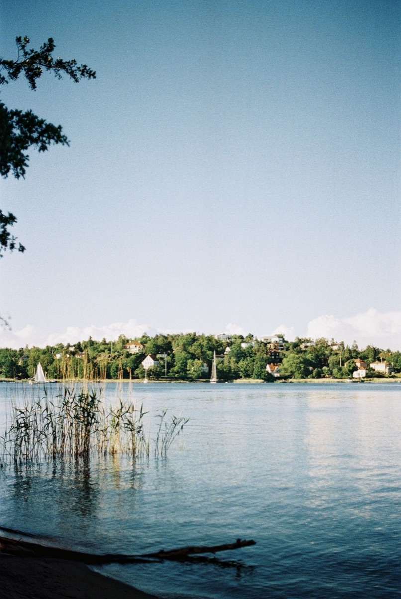

ciao i'm a linguist based in stockholm, interested in ai, qualitative coding and data analysis.
If you can read this, you are a linguist too (written in the International Phonetic Alphabet).
-
Course Assistant
Streamlined communication between students and faculty actors through Canvas (LMS). Coordinated planning, delivery, and follow-up of one course per academic period alongside the course director.
-
Italian Language Teacher
Created and organised language course content to lead adult students to higher proficiency by adapting lessons to their level.
-
Italian Mother-Tongue Teacher
Monitored student progress and engagement, pinpointed recurring learning obstacles, and modified lessons to enhance participation and outcomes.
-
Recruitment Consultant Intern (HR)
Sourced and screened candidates, reviewed CVs, and conducted initial candidate interviews to assess skills and suitability to clients' needs.
-
MA in Language Science, Specialisation in Applied English Linguistics
-
Mandarin Chinese Language Course (HSK4)
-
BA in Foreign Languages and Literatures
thesis: Perception and Linguistic Variation: A Study of Norwegian Dialects of Tromsø
-
Erasmus+ Exchange
thesis research
Peer Interaction in Italian EMI: Word Search Sequences in Italian English-Medium Instruction ↗
- Conducted a data-driven investigation of how Italian university students manage word searches in pair and group work in English-Medium Instruction (EMI) settings, using Conversation Analysis (CA) as the primary methodological framework.
- Built a corpus of audio recordings of naturally occurring peer-group talk, transcribed it according to CA conventions, and analysed it turn-by-turn to identify recurring interactional practices.
- Argued that word search difficulty in this setting is frequently disciplinary, tied to subject-specific terminology and content rather than purely linguistic in origin.
- Identified code-switching into Italian as a face-saving interactional resource that students deploy during word searches.
- Engaged closely with foundational CA literature on repair and word searches (Schegloff et al., 1977; Kurhila, 2006), core EMI research (Costa & Coleman, 2013; Rose et al., 2026), and recent work on word search sequences specifically (Siegel, 2026).
research interests
Peer interaction in higher education; word search sequences, their initiation and resolution; English-Medium Instruction (EMI); second language acquisition; Italian university instruction and language policies in Italian education. I am also interested in multilingualism, English as a lingua franca (ELF) and European language policies.
01SOF:↑ciao (.) i'm sofia
02.hh i study how people
03↑actually talk=
04=the pauses, the
05[overlaps,
06VIS:[mhm
07SOF:the u::ms,
08(0.8)
09>now i want to bring that<
10to ai, qualitative co- (.)
11coding and data ↓analysis.
12°and bring some creativity°
13°with me too°
Specialised in linguistics and conversation analysis, skilled in qualitative research and transcription, with experience in teaching at all levels of proficiency. Interested in AI implementation, qualitative coding and data analysis.
languages i can (kinda) speak
- italian
- english
- spanish
- swedish
- mandarin
ok, but what can i do?
- ai
- i use ai as a tool to improve my workflow.
- planning
- juggling different jobs has made me a big-time planner: tell me something and it will get its own space in my agenda.
- transcription
- i transcribe and do speech analysis with software like Praat (iykyk).
- teaching
- i am a teacher, so i am very patient, used to talking to big and small crowds, and not afraid to interact with all kinds of people.
people say i am...

01photography- 02[project]
- 03[project]
- 04[project]
- 05[project]